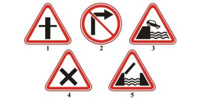
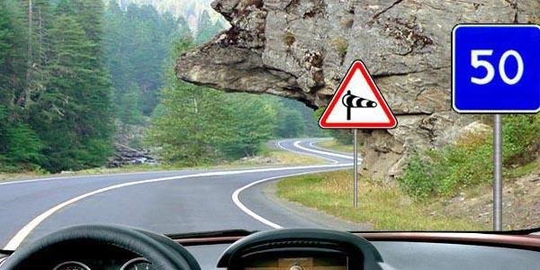
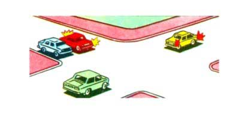
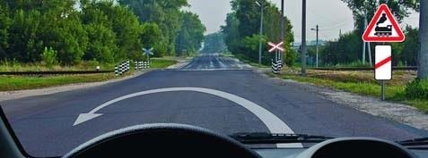
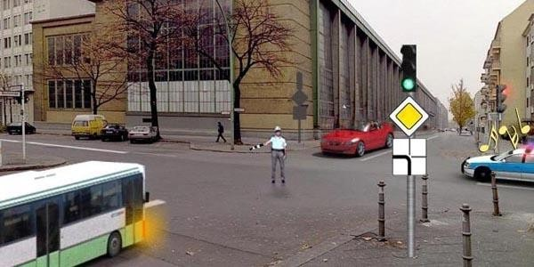
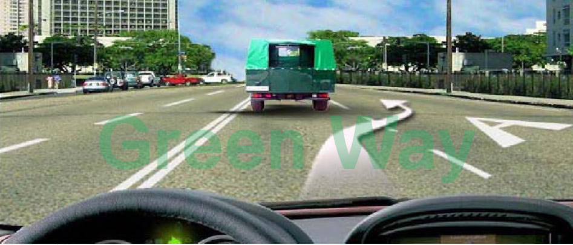
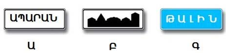
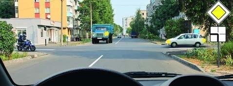
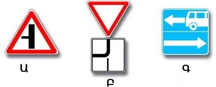

Թեստ 9
30:00
1. «Ճանապարհային երթևեկության անվտանգության ապահովման մասին» ՀՀ օրենքի համաձայն` մերձակա տարածքից ելքը դեպի ճանապարհ համարվու՞մ է արդյոք խաչմերուկ:
2. Երթևեկության սկիզբ է համարվում
3. Տրանսպորտային միջոցների շահագործումն արգելվում է, եթե`
4. Տրանսպորտային միջոցների շահագործումն արգելվում է, եթե՝
5. Հետադարձն արգելվում է`
6. Նշաններից ո՞րն է տեղադրվում երթևեկելի մասերի հատումից անմիջապես առաջ:

7. Ի՞նչ է ցույց տալիս այս ճանապարհային նշանը:

8. Խաչմերուկը երկրորդը կանցնի`

9. Հետադարձը նշված տեղում

10. Տվյալ իրավիճակում ո՞ր տրանսպորտային միջոցներն ունեն երթևեկությունը շարունակելու իրավունք:

11. Թույլատրվու՞մ է շարունակել երթևեկությունը սլաքով նշված ուղղությամբ:

12. Ի՞նչ առավելագույն արագությամբ է թույլատրվում միջքաղաքային փոխադրումներ իրականացնող ավտոբուսների երթևեկությունը բնակավայրերից դուրս`
13. Հետին հակամառախուղային լապտերիկները կարող են օգտագործվել`
14. Ո՞ր ուղղությամբ է թույլատրված երթևեկությունը
15. Նշաններից որի՞ ազդման գոտում չեն գործում բնակավայրում երթևեկության կանոնները

16. Զիջել ճանապարհը պարտավոր ենք

17. Ո՞ր նշանի դեպքում խաչմերուկում պետք է զիջեք ձախից մոտեցող վարորդներին
